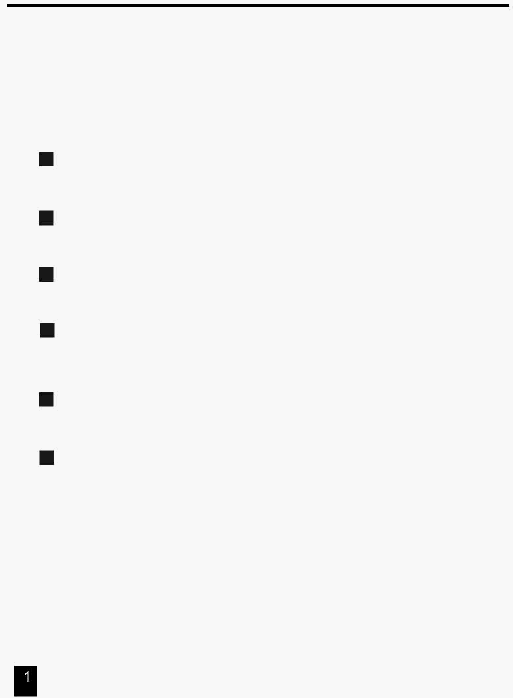

Особливості
Спасибі за Вашу покупку.
Відзначимо наступні особливості
виробу:
Цифрова Технологія.
Пульт керування світлом сцени може управляти як інтелектуальними дімерами, так
і звичайним світлом.
Пам'ять Збоїв по живленню.
Автоматичне поновлення останнього перед вимиканням стану, коли Ви знову
вмикаєте пульт.
Стандартні порти інтерфейсів MIDI й DMX.
Зручність підключення до інших блоків й апаратури.
Потужний редактор Програм.
Ви можете відредагувати будь-яку програму відповідно до своїх потреб.
Програма може містити 4600 кроків, і можуть бути збережені до 96 програм.
Розмаїтість типів виконання Програми.
Ви можете запускати сцени (SCENE) з аудіо входу, повзунка швидкості переходу,
стандартного щиглика й т.д.
Виконання Програм синхронно.
Ви можете виконувати велику кількість програм або послідовно в часі, або
одночасно.